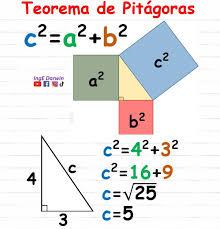
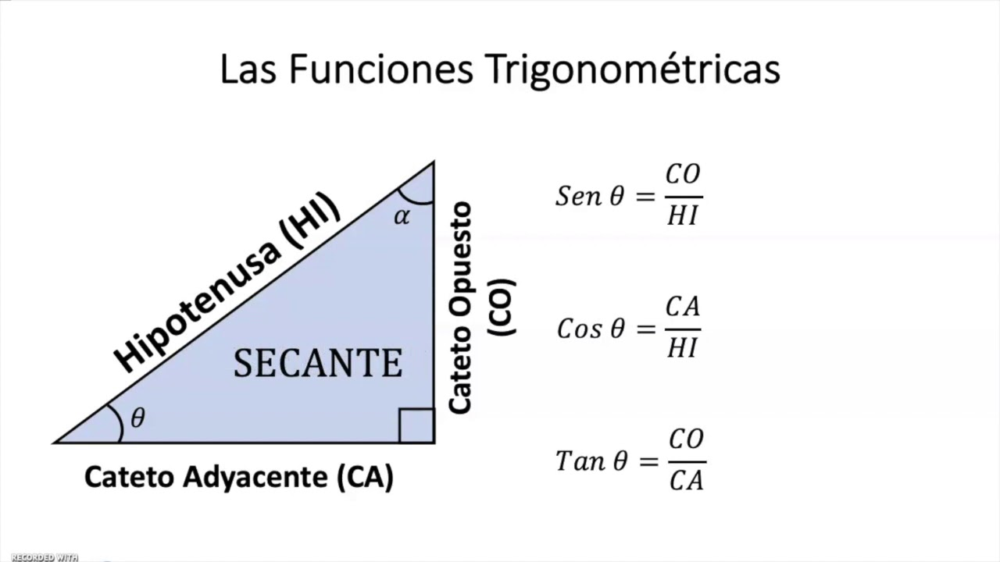

Teorema de Pitágoras:
Indica que en un triángulo rectángulo, la medida de la hipotenusa se obtiene al calcular la raíz cuadrada de la suma de las áreas de los cuadrados de los catetos.
Formula:
a² + b² = c²

Catetos (a, b) e Hipotenusa (c).
Funciones Trigonométricas:
• sen = opuesto / hipotenusa
• cos = adyacente / hipotenusa
• tan = opuesto / adyacente
